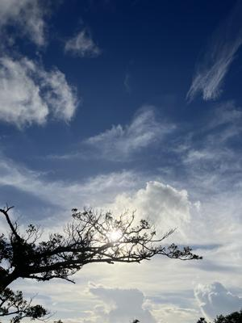
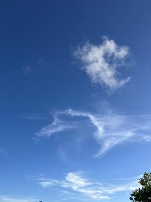

うるがいの話 ある日
最新: 通院【うるがいの話 ある日】とは 一日だけのプログです
『うるがいの話』の最新一日だけのプログで、通信料が少なく経済的だ。カニの画像をクリックすると全ての日付が載る『うるがいの話』サイトを表示します
|
|
【うるがいの話】 うるがい(ｳﾙｶﾞｲ urugai)とは、『もずくがに』の名前でとても大きくなります。 |
|---|---|
|
|
【カミマヤーの話】 猫のことを方言でマヤーといいます。カミマヤー（kamimayaa）とは、神の猫のことです。 |
|
【たながぁの音楽】 たながぁ（ﾀﾅｶﾞｰ tanagaa）とは手長えびのことで、何種類かあり大きいのは車 エビぐらいになります。 |

|
【ぶながぁの話】 ぶながぁ(ﾌﾞﾅｶﾞｰ bunagaa)とは、赤い髪の毛、赤い身体、そして身長は１ｍ２０ｃｍ ぐらい、川の蟹を食べているの目撃された。場所は沖縄県国頭郡大宜味村のと ある村僕の隣近所に住んでいる爺さんから、聞いた話です。 |
|
|
【ギーマの話】 ギーマ(giima)とは、山原の里山に咲くスズランに似た、 花を付けます。実は食べられます、 気が付くと口の周りが紫になっています。 |
2024年07月12日 (金）通院
17:10
 
ヨメが、胃腸科に通院する。朝８時３０分に家を出て８時４０分過ぎに病院
で受付けの１０人ほどの行列に並ぶ。そして、嫁が受付から戻ると診察は、
１５時半から１６時頃になる。駐車場は、車で一杯、停めるのに苦労してい
る人もいる。なんという混雑ぶり！、いつも空いてはないが人気のある先生
だから？。うちの近所の胃腸科（２か所）は、やぶ医者なのでわざわざ遠く
に来るのである。
１４時過ぎ、病院から今から来てくださいと連絡があり１４時半過ぎに病院
へ着く。もろもろが終わったのは、１５時３０分ほぼ一日がかりだった。で
も予定より早めだったので得したような錯覚だ。
昨日は、私は眼科に行った。ネットで予約、予約の９時半の数分前に病院へ
入り、診察（ドライアイ）を終え清算まで１０分ほどで終えた。
ヨメの病院は、予約できないという、毎回苦労して通院する。
１７時０５分 ビットコインの総資産 ￥２６、３７８（↓９３３）